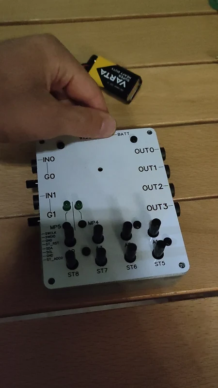

AUDIO DSP / ELECTRONICS
Digital effects pedal
A guitar and bass effects platform combining a high-impedance analog front end with the shared audio-processing module.

Project overview
I designed a digital effects-pedal carrier around the ADAU1701 audio SoM. Its analog interface accepts guitar or bass signals, while the reusable core handles programmable audio processing.
This project translates the same DSP architecture used in the Eurorack module into an instrument-oriented format, with a dedicated power supply and front-panel controls.
System & specifications
| Audio core | ADAU1701 SigmaDSP with companion STM32 |
|---|---|
| Instrument input | High-impedance front end with adjustable gain |
| Power | 9 V input with reverse-polarity protection |
| Regulation | Separate analog/digital 5 V rails and 3.3 V logic supply |
| Analog stages | TL072 input conditioning · NE5532 output filtering |
| Interface | Potentiometers, buttons, and audio connectors |
Instrument interface & power
The high-impedance input stage and adjustable gain adapt instrument signals to the DSP’s converters. A mid-supply bias allows the analog stages to work from the pedal’s single supply, while output filtering conditions the DAC signals for the external audio connections.
The schematic separates analog and digital regulation and includes input-polarity protection. The processing core plugs into the carrier rather than being duplicated on it.
Prototype state
The assembly video documents the physical board stack, and the power-on clip shows the finished front panel with its indicators. The platform is intended for developing custom effects and signal-processing programs.
The case study documents hardware assembly and power-on. A specific effect demonstration and measured noise, latency, or frequency-response results are not included.
Electronics & front panel


Select an image to enlarge it.
Assembly & power-on
Assembly and power-on footage documents the prototype state. Measured audio performance is not included in these clips.
Interactive 3D model
Inspect the board from every angle.
Load the supplied assembly to inspect the pedal's component placement and connectors.
Prepared directly from the supplied OBJ geometry and MTL colors for browser viewing. Display scale is normalized; the original OBJ and MTL files are available below.
Documentation & CAD
Source: CV portfolio description, supplied carrier schematic, OBJ assembly, and prototype media.